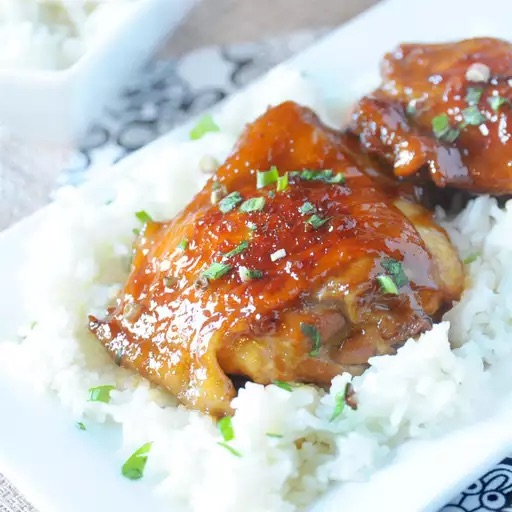

Soy Sauce Chicken

Description
This chicken with soy sauce recipe is a delicious, fast, and easy weeknight dinner.
The chicken comes out flavorful with a sweet and tangy glaze.
Serve with rice and steamed snow peas for a complete meal.
Ingredients
- 1 cup white sugar
- 1 cup soy sauce
- 1 cup water
- 1/4 cup minced garlic
- 1/4 cup minced fresh ginger
- 5 pounds bone-in chicken thighs with skin
- 1/4 cup chopped green onions
Steps
- Combine sugar, soy sauce, water, garlic, and ginger into a large stockpot over medium heat; stir until sugar dissolves.
- Add chicken thighs and bring to a boil. Simmer, turning the chicken thighs with tongs every 5 minutes, until the sauce is a rich, brown glaze and the chicken is no longer pink at the bone and juices run clear, about 35 minutes. An instant-read thermometer inserted near the bone should read 165 degrees F (74 degrees C). Remove pot from the heat and let cool 10 minutes.
- Transfer chicken thighs to a platter; sprinkle with chopped green onions.